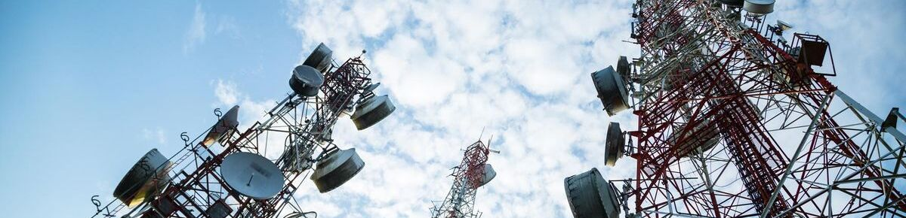

Connecter
La compétence Connecter regroupe les travaux réalisés cette année autour des infrastructures de communication et de la transmission des données. Elle s'articule autour de deux axes : d'un côté, une approche physique et fréquentielle avec l'étude des signaux radio et des techniques de modulation, de l'autre, une approche plus orientée réseau avec la conception et l'interconnexion d'infrastructures multi-sites.
Ces projets m'ont permis de mieux appréhender la chaîne de communication, depuis la génération d'un signal jusqu'à sa transmission et sa réception, aussi bien dans le domaine des télécommunications que des réseaux d'entreprise.
SAE301 - Etude et mise en oeuvre d’un système de transmission
Cette SAÉ réalisée en trinôme avait pour objectif de concevoir une chaîne complète d'émission et de réception radio en utilisant la radio logicielle (SDR). Le projet s'est articulé autour de plusieurs outils : le logiciel GNU Radio pour la conception des chaînes de traitement du signal, l'émetteur/récepteur Adalm-Pluto comme interface radio, et l'analyseur de spectre Spectran HF-6065 couplé au logiciel MCS pour l'observation des signaux.
De mon côté, je me suis concentré sur la recherche bibliographique et l'étude des modulations. J'ai étudié et comparé les différentes techniques de modulation numérique, notamment l'ASK, le PSK et le QAM, en analysant leurs caractéristiques, avantages et limites respectifs. J'ai également travaillé sur l'analyse spectrale des signaux, en apprenant à lire et interpréter un spectre de fréquences, à identifier les bandes occupées par les opérateurs mobiles, et à comprendre les différences entre flux montant et descendant. Enfin, j'ai réalisé une synthèse sur le système DAB+, la radio numérique terrestre qui a vocation à remplacer la FM analogique d'ici 2030.
L'aboutissement du projet consistait à transmettre un flux audio/vidéo par voie radio à 433,92 MHz en modulation GMSK, en utilisant VLC pour la diffusion et GNU Radio pour la chaîne d'émission et de réception. Si la maquette était théoriquement fonctionnelle, nous n'avons pas réussi à restituer correctement le flux vidéo en réception. Avec le recul, cette situation est certes frustrante, mais nous avons compris la raison de notre erreur ce qui à été marquant pour la suite. Nous avons identifié les causes probables, notamment un débit trop élevé pour la bande passante disponible, un mauvais choix de modulation face à l'OFDM et des problèmes d'adaptation des codecs.
Ce projet représente une vraie progression dans ma compréhension du phénomène de modulation. Des notions qui relevaient jusqu'alors de la théorie pure, comme la représentation fréquentielle d'un signal, les bandes latérales ou le théorème de Shannon, sont devenues concrètes et manipulables. C'est le type de projet qui donne du sens aux cours magistraux.